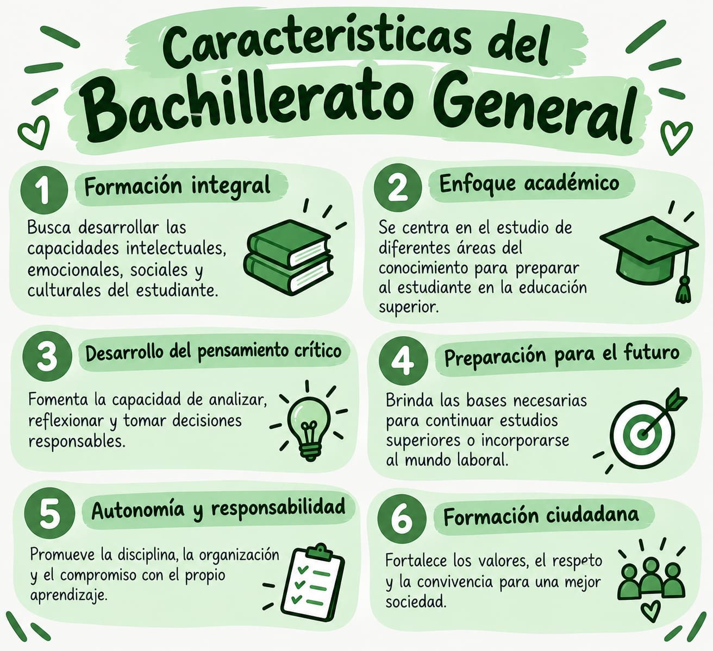

Bachillerato General
Educación Media en El Salvador
Educación Media en El Salvador
Bienvenidos al portal oficial de información sobre el Bachillerato General. Aquí encontrarás todos los detalles esenciales sobre este plan de estudios en El Salvador.
El Bachillerato General en El Salvador es un programa de educación media con una duración oficial de dos años, diseñado para preparar a los estudiantes de forma integral y facilitar su ingreso a la educación superior.
En El Salvador, el Bachillerato General tiene una duración regular de dos años. Durante este tiempo, los estudiantes profundizan en los conocimientos adquiridos en la educación básica y desarrollan nuevas habilidades que les servirán para enfrentar los desafíos académicos, profesionales y personales del futuro. Además, el bachillerato representa una etapa importante en la vida de los jóvenes, porque les permite comenzar a definir sus intereses, reconocer sus capacidades y establecer metas para su futuro. A través de las diferentes materias y actividades escolares, los estudiantes pueden descubrir las áreas que más les gustan y considerar qué carrera universitaria o profesión desean seguir.
El Bachillerato General proporciona una educación amplia en diferentes áreas del conocimiento, como Matemática, Lengua y Literatura, Ciencias, Estudios Sociales, Inglés y Tecnología, entre otras. Estas asignaturas contribuyen al desarrollo intelectual, social y personal de los estudiantes, ayudándoles a comprender mejor la realidad que los rodea y a desenvolverse de manera responsable en la sociedad.

El Bachillerato General en El Salvador es un programa de educación media con una duración oficial de dos años. Está diseñado para preparar a los estudiantes de forma integral, brindando una base sólida de conocimientos científicos, humanísticos y tecnológicos para facilitar su ingreso a la educación superior.
El Bachillerato General es un programa de estudios de 2 años, creado para que los estudiantes adquieran conocimientos y destrezas básicas, además de desarrollar competencias para poder optar a cualquier carrera universitaria.
El currículo del Bachillerato General está organizado en materias básicas y especiales. Por lo tanto, los estudiantes deberán, para poder graduarse, desarrollar aprendizajes en dichas áreas que les permitan prepararse para la vida y para continuar con cualquier carrera profesional y así tener éxito en la educación superior.
.jpeg)
Entre las características principales de este bachillerato se encuentran:

El plan de estudios comprende asignaturas agrupadas en las siguientes áreas fundamentales:

Las funciones principales que cumple el Bachillerato General son:
La función educativa consiste en proporcionar conocimientos y desarrollar habilidades en diferentes áreas de estudio, como Matemática, Lengua y Literatura, Ciencias, Estudios Sociales e Inglés. Su objetivo es fortalecer la formación académica de los estudiantes, mejorar su capacidad de comprensión y desarrollar el pensamiento crítico. Además, les permite adquirir aprendizajes que pueden utilizar en su vida cotidiana y en sus futuros estudios.
Esta función consiste en preparar a los estudiantes para continuar sus estudios superiores después de graduarse del Bachillerato General. Durante esta etapa, los jóvenes adquieren conocimientos y habilidades que les sirven como base para ingresar a una universidad y elegir una carrera profesional, como Medicina, Derecho, Ingeniería o Administración de Empresas. También les ayuda a reconocer sus intereses y establecer metas para su futuro académico y laboral.
La función formativa busca desarrollar valores, actitudes y comportamientos positivos en los estudiantes. Promueve la responsabilidad, el respeto, la honestidad, la solidaridad y la disciplina, que son importantes para convivir con otras personas. Asimismo, contribuye a formar jóvenes capaces de tomar decisiones responsables, respetar los derechos de los demás y participar de manera positiva en la familia, la escuela y la sociedad salvadoreña.
.jpeg)
Actividades curriculares y extracurriculares:
.jpeg)


.jpeg)

.jpeg)

.jpeg)


.jpeg)
.jpeg)
.jpeg)
.jpeg)

.jpeg)

¿Tienes dudas sobre el Bachillerato General? Completa el siguiente formulario y te responderemos.